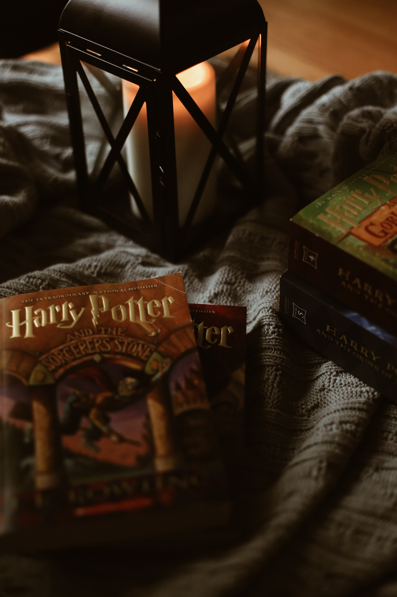

《해리 포터》(Harry Potter)는 1997년부터 2016년까지 연재된 영국의 작가 J.K. 롤링의 판타지 소설 시리즈다. 이모네 집 계단 밑 벽장에서 생활하던 11살 소년 해리 포터가 호그와트 마법학교에 가면서 겪게 되는 판타지 이야기를 그리고 있다. 1997년 6월 첫 번째 책인 《해리 포터와 마법사의 돌》이 출판되었으며, 2007년 7월 일곱 번째 책인 《해리 포터와 죽음의 성물》이 출판되었다. 해리포터 시리즈가 큰 성공을 거두면서 전 세계적으로 인기를 얻었으며, 영화를 비롯한 다양한 상품들이 제작되었다. 해리 포터 소설은 역사상 성경 다음으로 가장 많이 팔린 책이다.
2016년 7월 31일 해리 포터와 그의 아들에 관한 이야기를 담고 있는 여덟 번째 이야기《해리 포터와 저주받은 아이》가 출판되었으며, 2017년 10월 23일 한국어 판이 출판 되었다. 《해리 포터와 저주받은 아이》는 소설판이 아닌 연극용으로만 만들어진 것이기 때문에 연극용 대본판만 있다. 하지만, 원래 해리 포터의 작가 조앤 K. 롤링은 해리 포터를 쓰기 전에는 국가에서 지원을 받는 저소득층으로 기초유급자 생활을 하고 있었다. 하지만 롤링이 집 근처 카페에서 해리포터와 마법사의 돌을 완성하고 블룸즈베리 출판사에 책을 출판한 후 이 책은 지금까지 4억 부 이상이 팔렸으며, 《해리 포터》는 《반지의 제왕》, 《나니아 연대기》와 같은 유명 판타지 소설 책으로 평가 받는다.